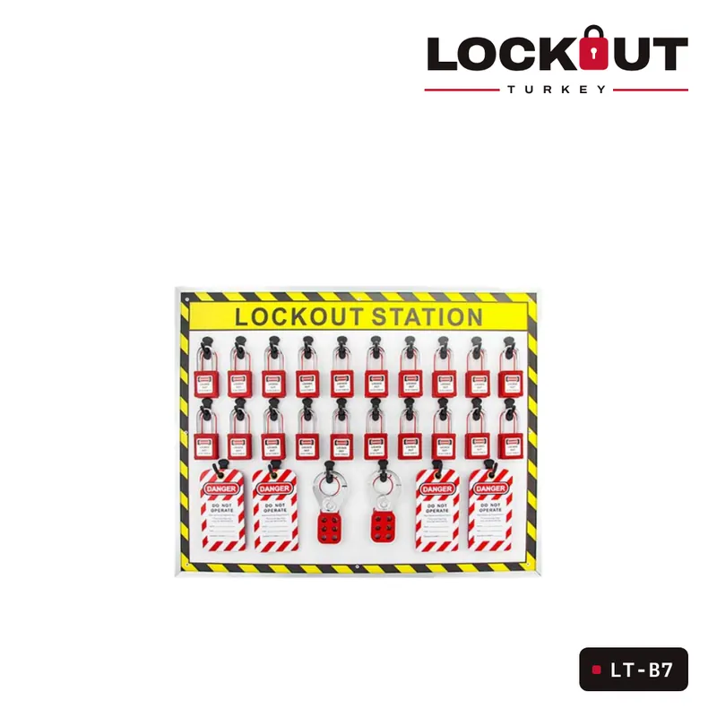
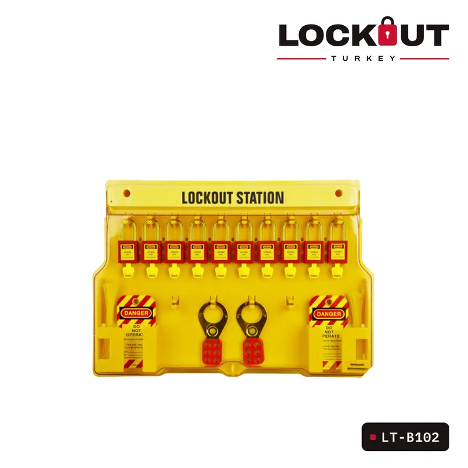
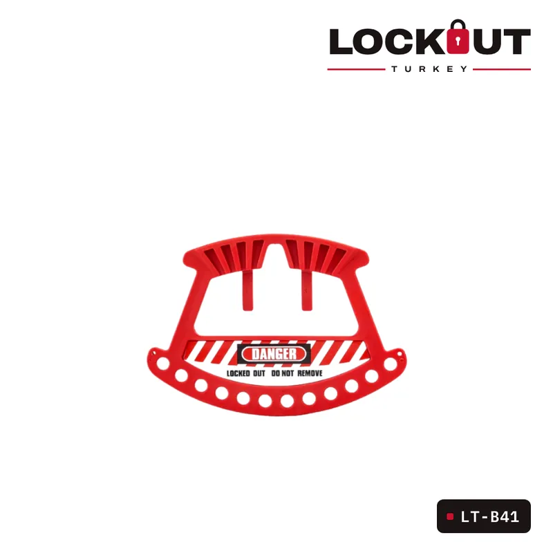
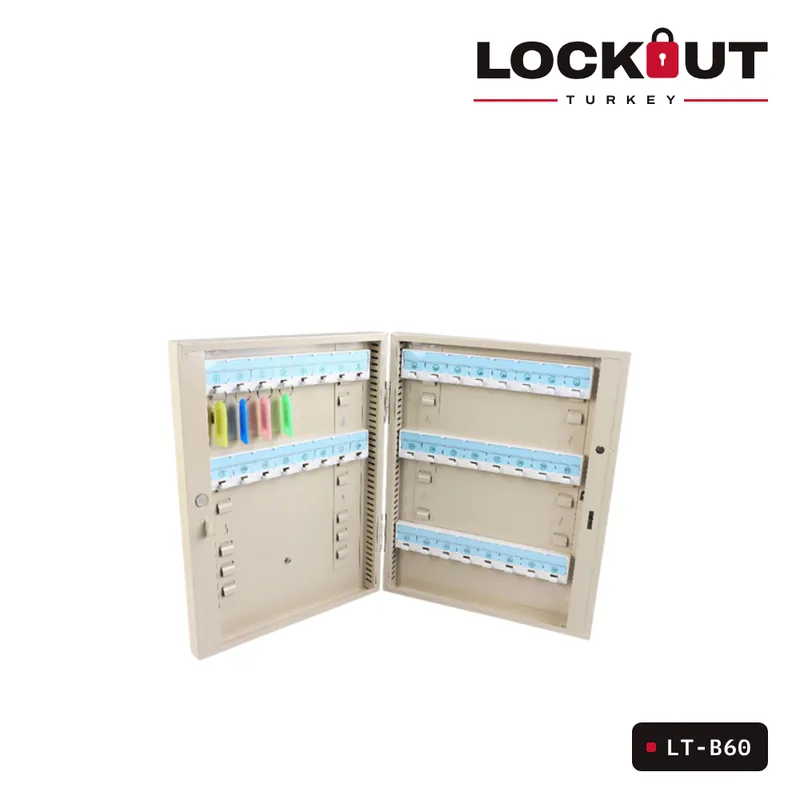
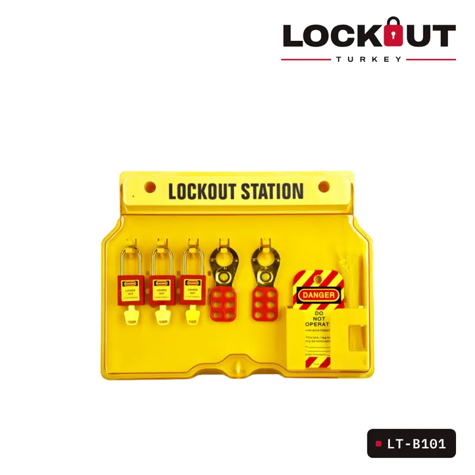

LT-B7 Serisi Kapaksız Gölge Kilit İstasyonları
LT-K01 Vinil Kaplı 25mm Çelik Çene Çoklandırıcı, grup kilitleme uygulamaları için tasarlanmıştır.

LT-B102 Duvara Monte Edilebilen Kapaklı LoTO İstasyonu, daha büyük ekipler ve yoğun kilitleme ihtiyaçları için geliştirilmiş, yüksek kapasiteli ve düzenli bir kilitleme ekipmanı depolama çözümüdür. Saydam kapaklı tasarımı ile ekipmanlar hem görünür hem de koruma altında tutulur.
| Ürün kodu | LT-B102 |
|---|---|
| Kategori | LOTO İstasyonları |
| Kapasite | 28 Asma kilit + 56 Mandal + Aksesuar alanı |
| Malzeme | Sağlam plastik gövde, şeffaf kapak |
| Kullanım Alanı | Endüstriyel tesisler, enerji merkezleri, bakım departmanları, LoTO uygulamaları |
Geniş ekiplerin eş zamanlı kilitleme uygulamaları için merkezi bir istasyon ihtiyacına LT-B102 ile profesyonel bir çözüm getirin. Ekipmanlarınızı koruyun, süreci hızlandırın.

LT-K01 Vinil Kaplı 25mm Çelik Çene Çoklandırıcı, grup kilitleme uygulamaları için tasarlanmıştır.

LT-B41 Taşınabilir 12'li Kilit Askısı, bakım ve enerji izolasyonu sırasında kullanılan kilitleme ekipmanlarının düzenli taşınması ve güvenli…

LT-B60 20 Kancalı Anahtar Yönetim İstasyonu, farklı boyutlardaki anahtarların güvenli, düzenli ve sistemli bir şekilde saklanmasını ve yönetimini…

LT-B101 Duvara Monte Edilebilen Kapaklı LoTO İstasyonu, küçük ve orta ölçekli ekiplerin kilitleme-etiketleme ekipmanlarını düzenli, erişilebilir ve…